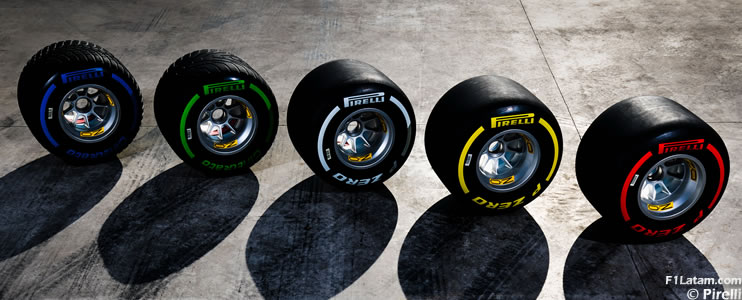

Tipos de Neumáticos
En Fórmula 1, los neumáticos juegan un papel clave, tanto como el coche o el piloto. Cada carrera se puede ganar o perder según cuándo y cómo uses los neumáticos. Pirelli, que es el proveedor oficial, trae seis tipos diferentes divididos en dos grandes grupos: los de seco y los de lluvia.
Empezamos con los de seco, también llamados “slicks”:
Estos son lisos, sin dibujo, porque están diseñados para ofrecer el máximo agarre posible cuando la pista está completamente seca.
Neumáticos duros (color blanco): Son los más resistentes. Tardan en calentarse, pero una vez que están a temperatura, duran muchas vueltas. Se usan cuando el asfalto es muy abrasivo o hace mucho calor. Son los que menos se desgastan, pero también los que menos agarre ofrecen
Neumáticos medios (color amarillo): Son el equilibrio perfecto. Tienen buena duración y un agarre decente. Por eso, son los favoritos para la mayoría de estrategias de carrera. Van bien casi en cualquier circuito.
Neumáticos blandos (color rojo):Estos son los más rápidos, pero también los que menos duran. Se calientan enseguida, así que dan un gran rendimiento en clasificación o al comienzo de la carrera, pero no aguantan tantas vueltas. Perfectos para circuitos urbanos o condiciones más frías.
Cuando la pista está mojada, los neumáticos lisos (slicks) ya no sirven, así que entran en juego dos tipos especiales con dibujo:
Intermedios (color verde):Se usan cuando la pista está húmeda o hay una llovizna ligera. También funcionan bien si la pista se va secando. Son muy versátiles, por eso son los más comunes en condiciones cambiantes.
Lluvia extrema (color azul):Aquí hablamos de agua de verdad. Si está lloviendo fuerte o hay charcos, estos son los que salvan el día. Pueden desplazar un montón de agua y evitar el temido aquaplaning.
¿Cuándo se usan y cómo se eligen?
Antes de cada carrera, Pirelli escoge los tres compuestos slicks más adecuados para ese circuito. Luego, durante el fin de semana, los equipos prueban y deciden su estrategia.
En carrera, cada piloto está obligado a usar al menos dos compuestos diferentes si la pista está seca, lo que significa que deben hacer al menos una parada.
Pero si llueve, esa regla se anula, y pueden usar solo intermedios o lluvia, según lo que necesiten.
